< < < Back
14 Self-Defense Tools To Use Where Weapons Are Banned – Return Of Kings
With the growing presence of angry leftist mobs in any large Western city, as many of my colleagues at ROK pointed out, security becomes more and more of a concern. Luke Stranahan’s recent advice is an important piece on how to use a gun to defend yourself against violent organisations such as Black Lives Matter.
It boils down to the advice: be aware, be armed and shoot first. The only issue is that with the growing leftist sentiment around the Western sphere, many of our readers live in areas like Western Europe (or in American leftist spots like New Jersey or California and their strict gun laws), where guns are outright banned and so is any kind of object perceived as a weapon.
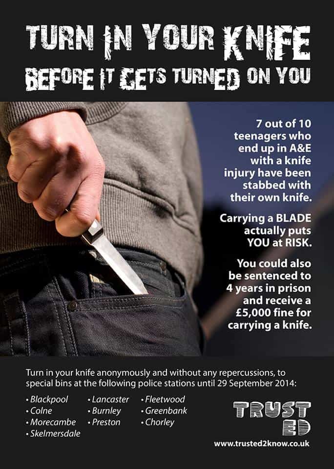
You might get in more trouble for carrying something to defend yourself than punching someone into unconsciousness in the street. So goodbye knifes, tasers, machetes, sword canes, whips, kitchen knifes and other expandable batons.
But if we must not fall in the survivalist paranoia, any man has the right to defend himself, even more so if outnumbered. Knowing the context, we must avoid the items with blades as they directly classify as a weapon and therefore include harsher treatment by the law if prosecuted.
1. Screwdriver or hammer
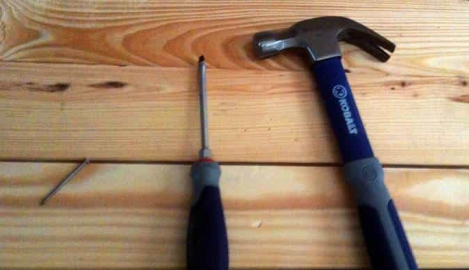
The important part here is the legal status of both weapons as they are both common trade tools. If you are searched, you can explain that you enjoy DIY (as in a lot of places, you can carry them under a “valid motive”). If you don’t look like trouble, the worst that could happen would be to see your tool confiscated.
The screwdriver would have the advantage of being lethal even if it is quite small. A problem that can’t be solved with the hammer as the stopping power and the fear it inspires depends of its size.
The hammer is also lethal but enjoys a much more sinister reputation from all the portrayals in Hollywood horror movies. Law enforcement would be immediately more suspicious towards you.
2. Box cutter
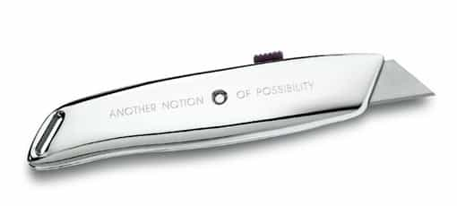
Quite an effective blade as the lacerations inflicted will be deep and make the attacker bleed profusely or slice an artery, but stabbing wounds are unlikely as the blade is very thin and would likely snap on impact.
Proof it works: it is the first thing that all the migrants buy in any shop around Europe when they arrive. I did a test in Berlin recently going in a few hardware stores and supermarkets. It is practically impossible to find them as Soros’ minions have already bought them all. It has a bad image in Europe as it is the thug’s weapon of choice. It would be extremely hard to explain why you carry a box cutter if you don’t work at the local arts and crafts shop.
3. Metal pipe turned into a flute
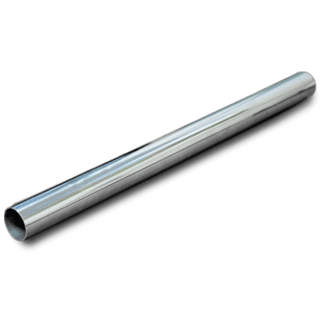
Had this idea last year, as I wanted recreate a Bulgarian flute called a “kaval.” I find the melody sad and beautiful, even better when the instrument is made of steel (it is traditionally made of wood).
A metal pipe is a simple, reliable and weapon that allows you to strike from far, either in a circular motion or in a thrust like with a spear.

I was practicing outside and realised that if any trouble came to me, this stupid pipe with holes could safe my life. And it cost me the equivalent of a whole four dollars.
4. Self-defense keychain
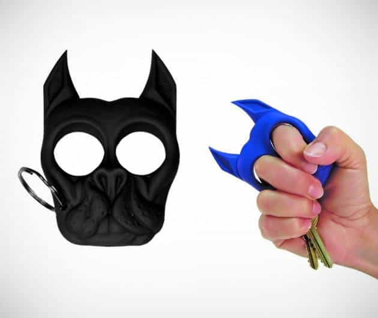
It has the advantage of being legal but has to be deprived of sharpened edges. The only issue is that it often comes in the form of a pitbull or a kitten.
Easy to carry and to reach, the defensive key ring comes handy when the aggressors are after your money and think that you will give them your wallet by reaching in your pocket.
5. Monkey fist

Probably one of my favourite of all this list, as it is extremely effective and has a simple design. It is easier to reach than one’s belt and less obvious. There are tutorials for monkey fists everywhere on the Internet.
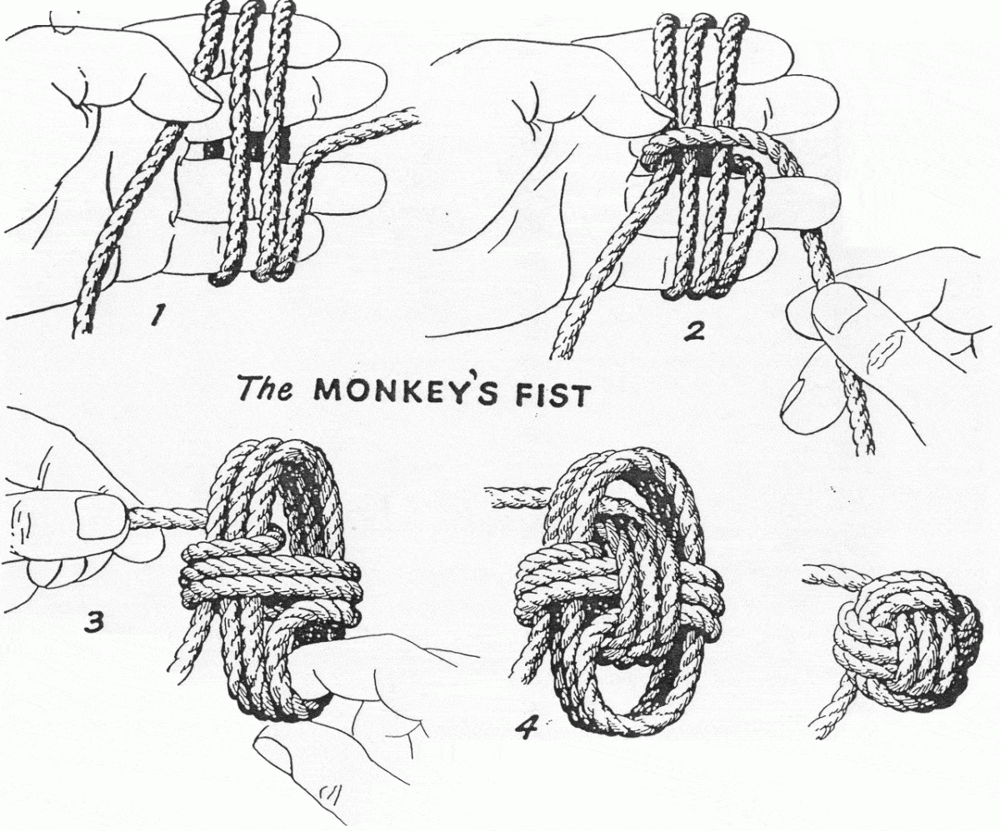
For maximum efficiency, it would be better to use a steel ball or a marble for the core. The most common way to make it is to use a bit of parachord and a ball from a ball bearing. It uses the same circular motion as a medieval flail. It can easily crack a skull or break bone as demonstrated below
6. Belt or belt chain
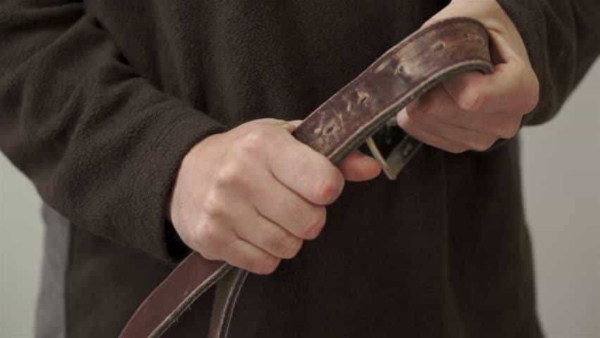
It takes too long to take it out of one’s pants, is obvious and an advancing attacker can grab it and counter attack. It is a last resort weapon to use only if nothing else is available.
The iron buckle can break and will only make the attacker angrier if the victim does not hurt him seriously. Same for biker whips and chains attached to the pockets like skinheads and punks used to wear, it takes too long to unhook.
“If there is a knife and you have none. You shoot or you run”. Look at this clown. :
A stealthy alternative to this type of defensive clothing would be the sap cap, a weaponised baseball cap ballasted with a lead disc. Undetectable, effective and fast. The only problem is how it is seen by the laws of your respective country.
7. Kubotan (pocket stick)
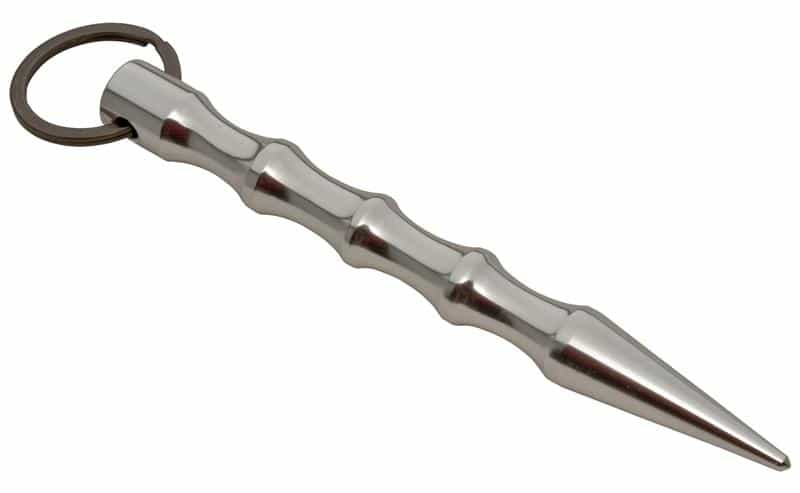
The pocket stick is easy to carry, cheap and can also be homemade. It can hardly be seen as a weapon, especially if its appearance is quite plain. It can easily fit on a key ring. The problem is the short range and one must be accurate during the strike as it is mainly designed to hit the soft areas of the body like the stomach, groin, neck or face.
A perfectly legal alternative would be its cousin, the tactical pen.
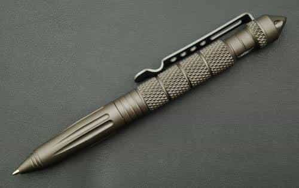
8. Electric torch
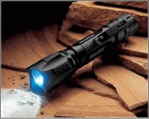
Ideally, it would be very sturdy and roughly as long as a hand. It is also extremely useful even for any other occupation than self defense. It fits on a key ring and a torch with a high number of lumens can blind a person even in broad daylight.
A heavy and large torch would not be easy to carry in addition of slowing you down. A small electric torch like this one could have saved the people in the Orlando club shooting.
9. Sling
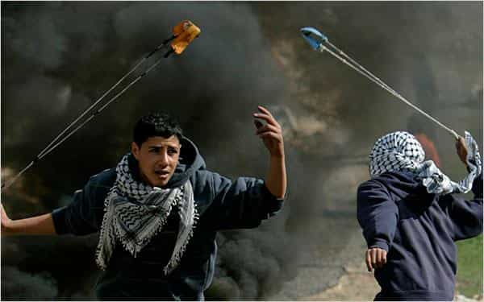
The great perk of the sling is that it is extremely cheap and easy to make and when it is in its finished form, it is just an inert, harmless rope. The main issues would be to carry around enough projectiles and not staying too static if attacked. Plus the trouble in which you can get if you cannot get rid of your projectiles fast enough, plus the association of the two elements that makes it a weapon.
Second problem would be accuracy (the most accurate sling practitioner usually hits a competitive target (the size of a head at 25 metres) about once out of four shots. No mistake, the shot will be lethal if it hits a vital as the crack heard when the sling is used is when it almost breaks the sound barrier.
10. Socket spanner
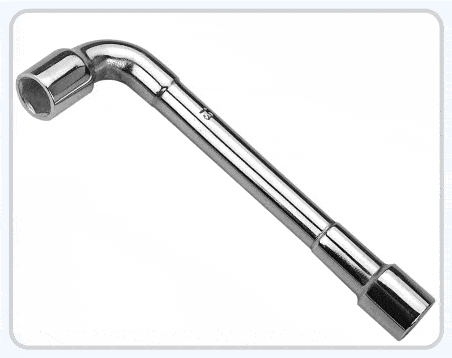
Fairly cheap and common, the socket spanner would be a better choice than an usual spanner and lighter to use as it is hollow. It is absolutely legal to carry one anywhere.
You can always pretend you are a mechanics enthusiast if searched by law enforcement.
11. Stone
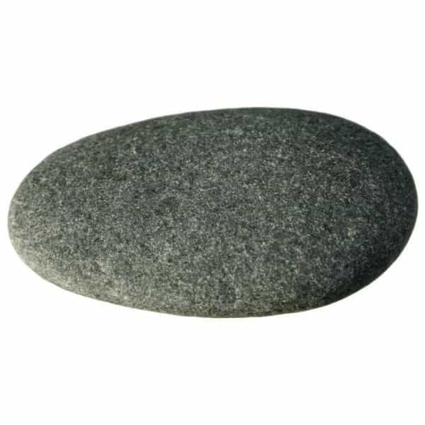
If it sounds stupid but it works, it is not stupid. Do not forget that It was also the weapon used during the first murder stipulated in the Bible and was also probably the same in human history. A stone fits also easily in a pocket and has the advantage of behind found everywhere for free.
12. Millwall brick
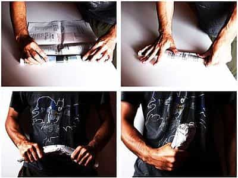
Made popular by the hooligan firms of the eponymous London Borough, the Millwall brick is a tightly-rolled newspaper folded in two. Cheap as dirt and can be made heavier with a few pebbles or pennies at the end of it. With this, hooligans were still entering the stadiums, even after being searched, and still able to seriously hurt the rival firm.
The following video’s hosts are two fruitcakes but the explanations are quite clear.
13. Umbrella
It is an innocent relative to the illegal sword cane or the suspicious cane if you are under seventy (although a crutch could fool a police officer). In addition to the fact that you are not a gentle sir tipping hats to any M’lady passing by.
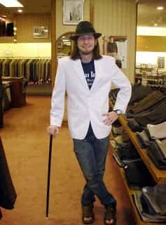
You have M’sword cane, M’lady!
A solid umbrella with a wooden handle and a metallic tip can seriously hurt.
There was an actual XIXth century European fighting style based on wielding an umbrella when swords and sword canes became illegal to carry on the streets.
14. Bonus: Slash resistant shirt
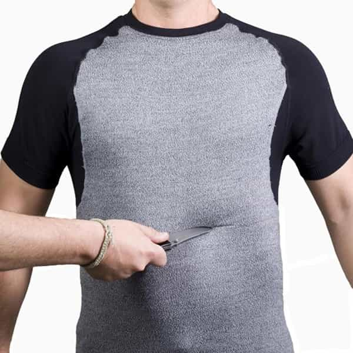
I heard about them a while ago during the knife carrying epidemic that spread around the UK when I was leaving there. Panicked parents at school were buying slash resistant uniforms for their kids in the rough areas.
The guys who created them quickly made a lot of money, capitalizing on the fear of the parents for their children. The idea was genius as the clothes look plain and give you a second chance if struck by a sharp object. It is legal everywhere and light, but can get a bit pricey.
Frappe le premier et frappe fort
But here lays the eternal question: is it worthy to carry a knife, in the unlikely event of an aggression and get in serious trouble with the local law if searched or opt for a weapon not as lethal and risk serious harm by not packing enough power?
For our readers in the USA and especially confronted to domestic terrorist groups and violent mobs such as BLM, I would back all heartedly my colleague Mr. Stranahan’s advice, in addition of proposing a secondary weapon: the bull whip or a bit more exotic, the sjambok, which used to be the weapon of choice of the South African Police. Hippo hide, guaranteed quality and efficiency.
Its imagery and heavy historical past would make any leftist, whichever his colour, think twice before charging someone wielding one. It would make any self-hating white break in tears and curl into an apologetic ball.
NOTE: ROK does not advocate violence. Self defense is a right when in danger. Consult your local legal adviser regarding your rights on carrying means to defend yourself.
Read More: Self-Defense Is An Essential Part Of Being A Man